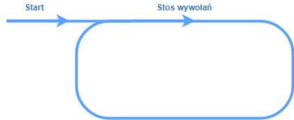
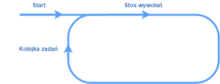
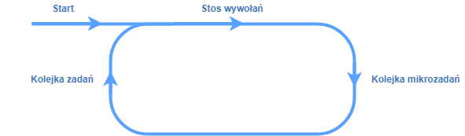

Event Loop and code execution order
This article was originally posted in the Just Geek IT magazine in September 2018 (in Polish). Here you can read it’s English translation. Unfortunately, the images are still in their original language, but I hope this will not discourage you from reading. Thanks for understanding! ;)
JavaScript is a quite controversial programming language. Some people love it, others hate it. It has a lot of unique mechanisms which are not present and have no counterparts in other popular languages. Code execution order, which might be sometimes unintuitive, is definately one of them. It causes a synchronous and asynchronous worlds to mix according to the main topic of this article: Event Loop.
JavaScript is a single-threaded language, right?
That’s correct, JavaScript is a single-threaded programming language. If we try to execute an infinite loop:
1 | while(true); |
the browser will get inpatient pretty quickly and will suggest killing the tab. It is due to the fact, that the tab thread is constantly busy by going through the loop and therefore is not able to refresh/rerender the browser window. This is one of the reasons why JavaScript is rarely used for complex, time-consuming tasks such as image processing.
Web pages are quite complicated though and a lot of things occur simultaneously. The browser downloads images, parses style sheets, in the same time sending HTTP requests in order to fetch our wall posts and renders the page. By some reason, everything works, despite the fact that only a single thread is available. There must be something more then, hidden under the hood…
A web browser is not V8, SpiderMonkey or Chakra alone
In order to cope with a quite tedious task of handling modern web pages, the web browser needs a few elements working together. The heart and the soul is a JavaScript engine, such as V8 in Chrome and Node, SpiderMonkey in Firefox and Chakra in Edge. In addition to that, the browser contains several own APIs (this is where e.g. setTimeout and alert implementations belong) and three separate queues, which release elements with different priority.

Unfortunately the world is not ideal and browsers have different event loop implementations. This article describes the mechanism basing on Chrome’s V8 behaviour. Description of differences across the browsers deserves a separate article ;).
Let have a detailed look at each of the elements.
Call stack
Call stack is the heart of the browser, execution of each line of the code needs to go through it. Each function call causes another element to be put on the top of the stack, whereas returing from a function pops the first element out. JavaScript engine performs operations gathered within the stack until the stack becomes empty.
Example:1
2
3
4
5
6
7
8
9
10
11function log(...args) {
console.log(args);
}
function prepareMessageSync(name) {
let now = new Date();
return `Hello ${name}! It's ${now.toISOString()}!`;
}
let message = prepareMessageSync('justjoin.it');
log(message); // logs "Hello justjoin.it! It's 2018-06-16T08:25:06.641Z!"
log('End');

Web APIs
Web APIs - additional interfaces provided by the browser, which the engine can make use of.
These include: methods connected with timing (e.g. setTimeout), sending XHR requests (XMLHttpRequest class) or DOM tree manipulation and event handling. Even though we use them in JavaScript code, they can be asynchronous, since they work in separate threads belonging to the browser. When an API call is ready, it’s callback is placed in the task queue.
Task queue
The next element is the task queue - this is where all of the function calls, that were passed as callbacks to the asynchronous methods of the Web API belong to. Nothing can be taken from this queue until the call stack is empty. In another words, not a single callback will be handled until there is any function being executed at the moment. This rule explains behaviour standing behind the setTimeout(fn, 0) “trick”. The fn function will be simply executed as soon as the browser becomes idle.
The task queue works according to the FIFO principle (First In First Out), therefore the earlier the element was put in the queue, the sooner it will be handled. Until taking a single element from the queue, event loop proceeds to the call stack and then, to the next queue - the microtask queue, which will be covered a bit later. So with each “cycle” of the loop, only a single task from the task queue can be handled.

Let’s add an asynchronous HTTP request to the previous example:1
2
3
4
5
6
7
8
9
10
11
12
13
14function prepareMessageXHR(name, callback) {
let request = new XMLHttpRequest();
request.open('GET', `/api/message/${name}`);
request.onreadystatechange = (e) => {
if (request.readyState === 4 && request.status === 200) {
callback(reqeust.responseText);
}
};
request.send(null);
}
prepareMessageXHR('justjoin.it', log); // logs a response from /api/message/justjoin.it
for(let i = 0; i<1000000; i++) {}; // a long synchronous operation
log('End');
Despite the fact, that the API can return a response before the long synchronous operation finishes, the logResponse function execution have to wait until the call stack becomes empty, even if it takes a lot of time.
In order to simplify things a bit, we can simulate an instant HTTP request using the setTimeout function with a delay equal to 0, which causes the callback to be placed in the task queue almost immediately.1
2
3
4
5
6
7
8
9
10function prepareMessageTimeout(name, callback) {
setTimeout(function() {
let now = new Date();
callback(`Hello ${name}! It's ${now.toISOString()}!`);
}, 0);
}
prepareMessageTimeout('justjoin.it', log); // 2. logs "Hello justjoin.it! It's 2018-06-16T08:25:06.641Z!
for(let i = 0; i<1000000; i++) {}; // a long synchronous operation
log('End'); // 1. logs "End"
Microtask queue
In the ES6 version of JavaScript a native implementation of Promises has been introduced. This is one of the mechanisms using a separate queue - a microtask queue. It is places right after the call stack in the loop scheme. Contrary to the task queue, where the engine was able to pick only a single item for each loop iteration, elements from the microtask queue are taken one after another, until the microtask queue becomes empty.
Another mechanisms that use this queue include MutationObserver, setImmediate and process.nextTick which is available in Node.js.

1 | function prepareMessageFetch(name) { |
Or, using the fake, instant request one more time:
1 | function prepareMessagePromise(name) { |
Render queue
In order to give a smooth experience, the browser has to refresh webpages about 60 times per second. A render queue contains tasks, that will be performed before the next render of the page occurs. If we want to place a piece of code there (e.g. in order to recalculate position of an object) we need to use the requestAnimationFrame function. The render queue is being processed until it becomes empty - the same as the microtask queue.
1 | prepareMessagePromise('justjoin.it').then(log); // 2. logs Promise response |

tl;dr
We can describe the whole process in these four steps:
- If there is something in the task queue, pick the first element and put it on the call stack.
- Process the call stack until it becomes empty.
- Process the microtask queue until it becomes empty.
- Process instructions coming from
requestAnimationFrame, recalculate styles, render the page.
In a graphic form it would look something like this:

Metaphorical representation of the Event Loop. Author: Filip Smulski.
Puzzles
1. What is going to appear in the console?
1 | let foo = 1; |
Answer: 2.
Why? MutationObserver uses the microtask queue, which is not being handled until the call stack becomes empty. Assigning the value of 2 to the variable foo will occur before the onChange callback will be executed.
2. What will be the order of the messages?
1 | setTimeout(() => console.log('timeout'), 0); |
Answer: promise, frame, timeout.
Why? After processing the whole call stack, the microtask queue is being handled (which is used by promises), then the render queue (which is used by requestAnimationFrame) and only after that, a task from the task queue (used by setTimeout) can be picked up. As a result, the messages will be presented in the reversed order.
3. What will be the order of the messages after clicking the button?
1 | <button>Click!</button> |
1 | let button = document.querySelector('button'); |
Answer: click1, promise1, click2, promise2.
Why? There are two functions being attached to the click event of the button. Their executions will be placed in the task queue one after another. In the next loop cycle, only the click1 function will be picked from the queue. As a result, the function logging promise1 will be placed in the microtask queue, which will be processed right after the call stack becomes empty. Only after the microtask queue becomes empty, the onClick2 function call can be picked from the task queue and handled accordingly.
3a. What will be the order of the messages after clicking the button?
1 | let button = document.querySelector('button'); |
Answer: click1, click2, promise1, promise2.
Wait… Why? Contrary to the previous example, onClick1 and onClick2 functions will be executed in a synchronous manner, therefore they both will be placed in the call stack immediately instead of “going through the task queue” first.
What next?
I hope that this article has clarified a one of the most important concepts that one can find in the JavaScript world. If you want to visualize how the event loop works in any given situation, I can strongly recommend playing with the Loupe tool created by Philip Roberts and his wonderful presentation from the JSConf.
References
Photo by Kelly Sikkema on Unsplash.